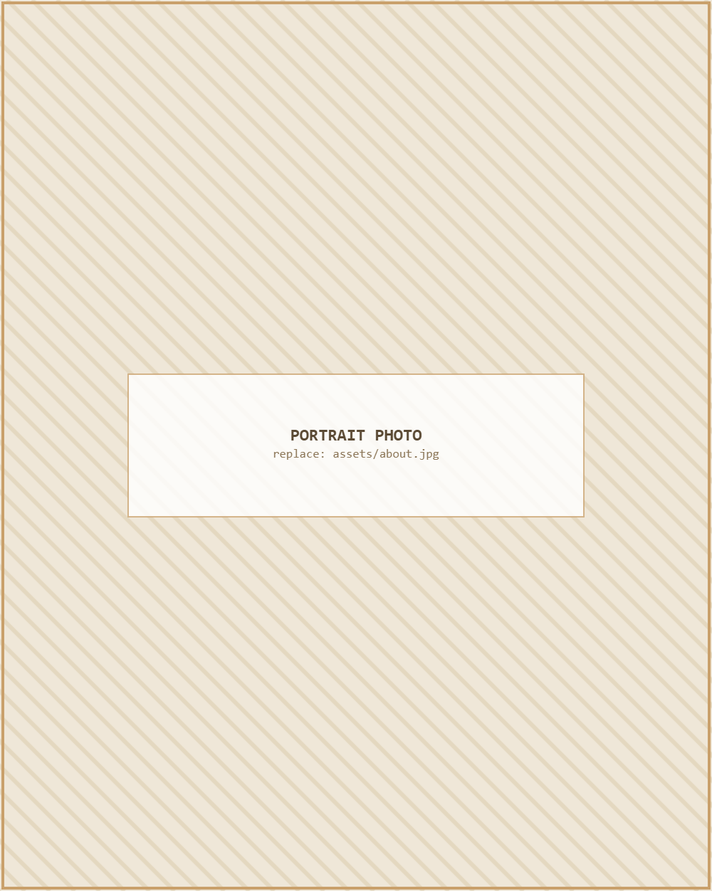

About Me
A closer look at my background, research philosophy, and the work I do outside the lab.

Hello, I'm Kaidul.
I am an Electrical and Electronic Engineering graduate from the Bangladesh University of Engineering and Technology (BUET), based in Dhaka, Bangladesh. My research sits at the intersection of computer vision, deep learning, and language technology — most recently focused on generalized deepfake detection and Bangla handwritten and scene text recognition.
Alongside research, I care deeply about teaching and about widening access to quality education. I believe interdisciplinary inquiry — moving comfortably between signal processing, machine learning, and hardware design — produces better engineers and better questions. That belief also drives my outreach work bringing hands-on science to underserved communities in Bangladesh.
Extending the reach of quality education to underserved communities is as much a part of my engineering practice as any lab result.
Research Interests
Beyond the Lab
I co-founded the Thakurgaon Science Society to bring school talks, public lectures, and hands-on science sessions to remote communities in Bangladesh. On campus, I serve as General Secretary of the IEEE EDS BUET Student Branch and Vice President of the BUET Literature Club, where I help organize "BUET Boimela," a major campus literary event.